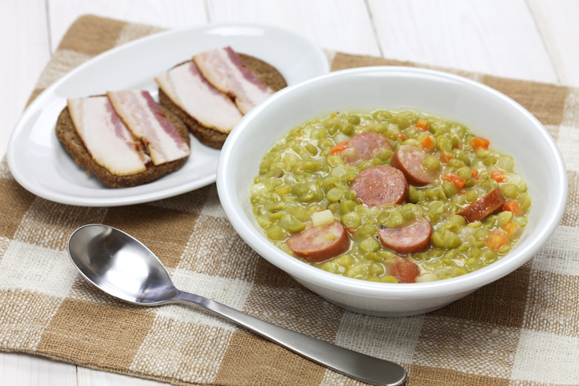

Gastronomía Moderna
Explora la vibrante escena gastronómica urbana de los Países Bajos, perfecta para los amantes de la comida innovadora y casual.
- Espuma de stamppot con crumble de rookworst

Deliciosa mezcla de sabores tradicionales con un toque moderno.
- Arenque marinado con gel de pepino y perlas de vinagre de manzana

Un plato fresco y único de la cocina moderna holandesa.
- Croquetas de queso holandés viejo con alioli de trufa

Sabor tradicional con un toque gourmet.
- Zanahorias baby al horno con hummus de guisantes y aceite de eneldo

Una opción saludable y deliciosa para disfrutar.
- Solomillo de ternera Frisona con puré de chirivía y reducción de cerveza trapense

Un plato principal digno de los mejores chefs.
- Postre de ruibarbo en texturas con crema de yogur y crumble de speculaas

Un final dulce y delicioso para cualquier comida.
Gastronomía Tradicional y Contemporánea
Descubre la perfecta mezcla entre la cocina tradicional holandesa y las interpretaciones modernas de chefs reconocidos.
- Stamppot Boerenkool

Un plato tradicional que celebra los sabores de la tierra.
- Erwtensoep (Snert)

Una sopa espesa y reconfortante para los días fríos.
- Haring 'Hollandse Nieuwe'
Un plato clásico de la gastronomía holandesa.
- Rendang de jackfruit o tofu

Un platillo exótico con influencias indonesias.
- Broodje pulled pork con kimchi

Una combinación deliciosa de sabores ahumados y fermentados.
- Salmón curado con gin holandés (jenever)

Un plato con un toque de la tradición local.
Gastronomía Auténtica y Saludable
Disfruta de la auténtica cocina holandesa con un enfoque en ingredientes locales y opciones saludables.
- lichte erwtensoep

Sopa ligera perfecta para los amantes de la cocina sana.
- Ensalada de arenque con remolacha y manzana

Fresca y perfecta para una comida ligera.
- Sopa de calabaza con semillas de hinojo y pan integral

Una opción saludable y reconfortante para cualquier día.
- Buddha bowl holandés

Perfecto para una comida llena de nutrientes.
- Ensalada de lentejas con queso de cabra y nueces

Un plato delicioso y lleno de sabor.
- Hutspot con aceite de oliva y tofu marinado

Una deliciosa opción vegetariana para disfrutar.